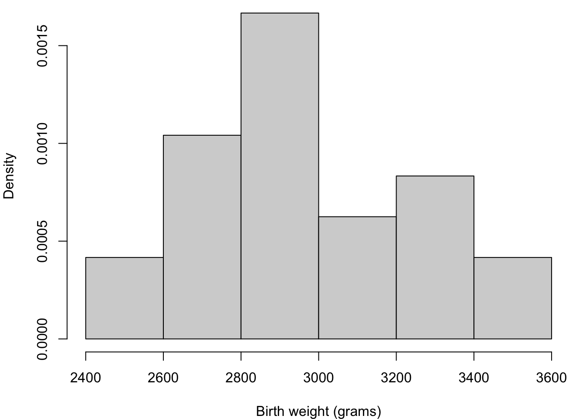
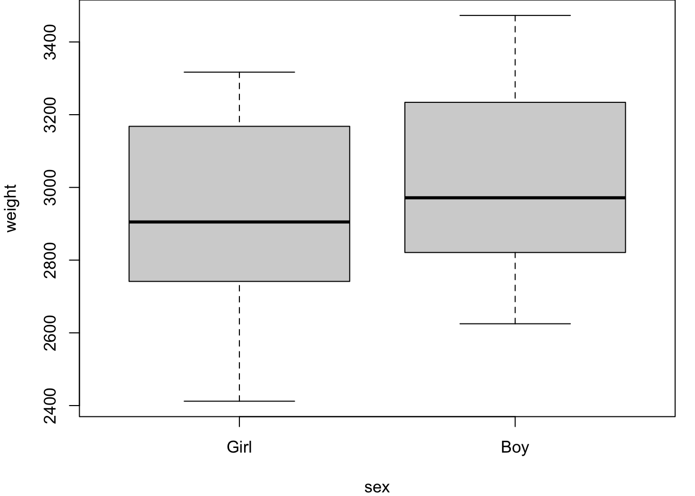
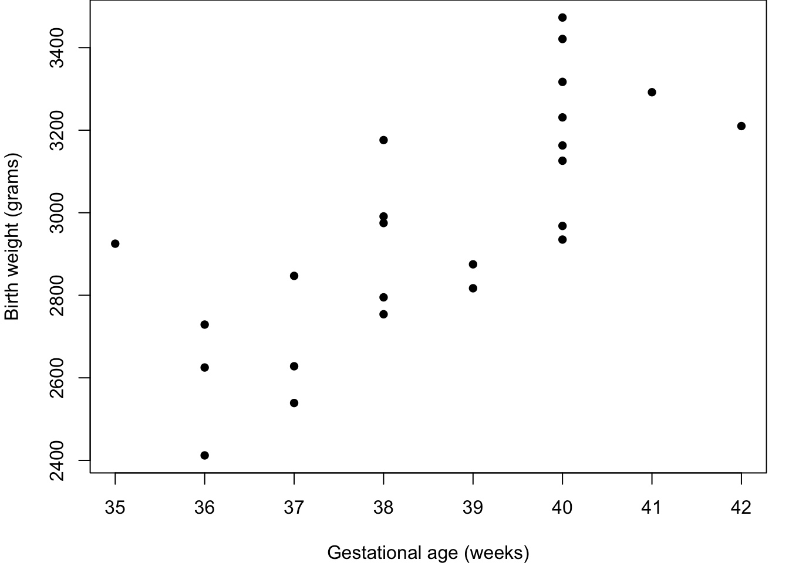

In many fields of application, we might assume the response variable is normally distributed. For example: heights, weights, log prices, etc.
The data1 in Table 2.1 record the birth weights of 12 girls and 12 boys and their gestational ages (time from conception to birth).
Table 2.1: Gestational ages (in weeks) and birth weights (in grams) for 24 babies (12 girls and 12 boys).
Girls
Gestational Age
Birth weight
40
3317
36
2729
40
2935
37
2754
42
3210
39
2817
40
3126
37
2539
36
2412
38
2991
39
2875
40
3231
Boys
Gestational Age
Birth weight
40
2968
38
2795
40
3163
35
2925
36
2625
37
2847
41
3292
40
3473
37
2628
38
3176
40
3421
38
2975
A key question is: can we predict the birth weight of a baby born at a given gestational age? Figure 2.1 shows initial exploratory plots.
Focus on modelling quiz
Test your knowledge recall and application to reinforce basic ideas and prepare for similar concepts later in the module.
For each situation, choose one of the following statements which you think is most likely to apply.
What is the most useful graphical summary for identifying a potential relationship between two variables?
What is the most useful numerical summary for identifying a potential linear relationship between two variables?
Which of the following is a true statement about the correlation coefficient? (Choose any that apply.)
Which of the following is a true statement about regression? (Choose any that apply.)
Which of the following is a true statement about statistical modelling? (Choose any that apply.)
Code
par(mar=c(4,4,0,1))birthweight =read.table("https://www.richardpmann.com/MATH3701/Datasets/birthwt-numeric.txt", header=T)weight = birthweight$weightage = birthweight$agesex = birthweight$sexhist(weight, breaks=6, probability = T, main ="",xlab ="Birth weight (grams)")boxplot(weight~sex, names=c("Girl", "Boy"))plot(age, weight, pch=16,xlab ="Gestational age (weeks)",ylab ="Birth weight (grams)")

(a) Weight distribution

(b) Weight sub-divided by Sex

(c) Relationship between variables
Figure 2.1: Birthweight and gestational age for 24 babies.
The histogram shows a spread around 2800–3000 g; the boxplot indicates slightly higher birth weights for boys; and the scatter plot shows an increasing relationship with gestational age. Together, these suggest that both gestational age and sex are likely to be useful predictors of birth weight.
Here, \(\texttt{Weight}\) is the response variable and \(\texttt{Age}\) (continuous) and \(\texttt{Sex}\) (a dummy variable: 0 for girls, 1 for boys) are the explanatory variables. Each model is a special case of the next — such models are called nested.
\(\gamma\) is the main effect of \(\texttt{Sex}\): the difference in birth weight between boys and girls at the same gestational age. \(\delta\) is the interaction between \(\texttt{Age}\) and \(\texttt{Sex}\): it captures whether the effect of gestational age on birth weight differs between boys and girls.
Figure 2.2: Birthweight data with fitted regression lines from competing models.
To choose between nested models we use \(F\)-tests. Let \(R_k\) denote the residual sum of squares (RSS) for Model \(k\) with \(r_k\) residual degrees of freedom. The test statistic for comparing Model \(k+1\) against the simpler Model \(k\) is
\[
F = \frac{(R_k - R_{k+1})/(r_k - r_{k+1})}{R_{k+1}/r_{k+1}},
\]
which under \(H_0\) (Model \(k\) is adequate) follows an \(F_{r_k-r_{k+1},\, r_{k+1}}\) distribution. A large \(F\) (small \(p\)-value) is evidence that the more complex model is needed. In R, anova() computes this table directly.
Analysis of Variance Table
Response: weight
Df Sum Sq Mean Sq F value Pr(>F)
age 1 1013799 1013799 27.33 3.04e-05 ***
Residuals 22 816074 37094
---
Signif. codes: 0 '***' 0.001 '**' 0.01 '*' 0.05 '.' 0.1 ' ' 1
The ANOVA table gives \(F = 27.3\) (\(p < 0.001\)): strong evidence that gestational age is a significant predictor. Fitting Model 2:
Code
fit2 =lm(weight ~ age + sex, data=birthweight)coefficients(fit2)
(Intercept) age sexM
-1773.3218 120.8943 163.0393
Code
anova(fit2)
Analysis of Variance Table
Response: weight
Df Sum Sq Mean Sq F value Pr(>F)
age 1 1013799 1013799 32.3174 1.213e-05 ***
sex 1 157304 157304 5.0145 0.03609 *
Residuals 21 658771 31370
---
Signif. codes: 0 '***' 0.001 '**' 0.01 '*' 0.05 '.' 0.1 ' ' 1
The estimate \(\hat\gamma = 163\) g is the additional birth weight for boys after adjusting for gestational age, and is statistically significant (\(F = 5.01\), \(p = 0.036\)). Comparing Models 2 and 3 is left as an exercise.
Focus on regression quiz
Which of the following is a true statement about correlation and linear regression? (Choose any that apply.)
Which of the following is NOT a true statement about model residuals? (Choose any that apply.)
Which of the following is a true statement about prediction using linear regression? (Choose any that apply.)
Which of the following is NOT an important part of regression model fitting? (Choose any that apply.)
2.3 Types of normal linear model
The dependent variable \(y\) is modelled as a linear combination of \(p\) explanatory variables \(\mathbf{x} =(x_1, x_2,\ldots, x_p)\) plus a random error \(\epsilon \sim N(0, \sigma^2)\). Table 2.2 summarises common special cases.
Table 2.2: Types of normal linear model and their explanatory variable types, where indicator function \(I(x=j)=1\) if \(x=j\) and \(0\) otherwise.
\(p\)
Explanatory variables
Model
1
Quantitative
Simple linear regression \(y=\alpha+\beta x+\epsilon\)
>1
Quantitative
Multiple linear regression \(y=\alpha+\sum_{i=1}^p\beta_i x_i+\epsilon\)
For the two-sample \(t\)-test model, observations in the two groups have means \(\alpha\) and \(\alpha+\beta_2\) under the corner constraint \(\beta_1=0\) — so \(\beta_2\) is the difference in means relative to a baseline. For one-way ANOVA with \(k\) groups, the corner constraint \(\delta_1=0\) means \(\delta_j\) is the mean difference between group \(j\) and group 1.
\(\mathbf{Y}\) is an \(n\times 1\) vector of observed responses;
\(\mathbf{X}\) is an \(n\times p\)design matrix;
\(\boldsymbol{\beta}\) is a \(p\times 1\) vector of parameters;
\(\boldsymbol{\epsilon}\) is an \(n\times 1\) vector of IID \(N(0,\sigma^2)\) errors.
Constructing the design matrix. Start with a column of ones (the intercept). For each quantitative variable add one column of values. For each qualitative variable with \(k\) levels, add \(k\) indicator columns and then delete one to avoid singularity (the corner constraint).
Example: Simple linear regression. For \(y_i = \alpha+\beta x_i+\epsilon_i\):
Example: One-way ANOVA with \(k\) groups. If observation \(i\) is in group \(g_i\), the design matrix has a column of ones plus \(k-1\) indicator columns (after the corner constraint). For a two-group (\(k=2\)) example with \(n=5\) observations:
with fitted values \(\hat{\mathbf{Y}} = \mathbf{X}\hat{\boldsymbol{\beta}} = \mathbf{H}\mathbf{Y}\), where \(\mathbf{H} = \mathbf{X}(\mathbf{X}^\top\mathbf{X})^{-1}\mathbf{X}^\top\) is the hat matrix. The residual vector is \(\mathbf{r} = \mathbf{Y} - \hat{\mathbf{Y}} = (\mathbf{I}-\mathbf{H})\mathbf{Y}\).
Focus on matrix representations quiz
What is the dimension of the design matrix?
What is the distribution of the error term?
Which quantity represents the model parameters?
Which two terms in the model have the same dimensions?
Which of the following is a potential problem when using qualitative variables?
2.5 Model shorthand notation
In R, a qualitative variable is called a factor and its categories are called levels. A convenient compact notation specifies models without writing out the full design matrix. Below, \(E\), \(F\) denote generic variables.
Table 2.3: Model shorthand notation
Notation
Meaning
\(E\)
Include \(E\) (one column if quantitative; \(k-1\) columns if factor)
\(E + F\)
Include \(E\) and \(F\) (no interaction)
\(E : F\)
Interaction of \(E\) and \(F\)
\(E * F\)
Shorthand for \(1 + E + F + E{:}F\)
\(E / F\)
Shorthand for \(1 + E + E{:}F\) (nested model)
\(\text{poly}(E, \ell)\)
Orthogonal polynomial in \(E\) up to degree \(\ell\)
\(-E\)
Remove term \(E\) from the model
\(I(\cdot)\)
Arithmetic expression, e.g. \(I(E*F)\) multiplies two variables
The notation uses ~ as shorthand for “is modelled by”. Examples:
Weight regressed on age and sex, no interaction: Weight ~ Age + Sex
Wellbeing regressed on age and income with interaction: Wellbeing ~ Age * Income
Degree class regressed on school and subject nested within school: DegreeClass ~ School/Subject
Yield regressed on variety and a quadratic in rainfall: Yield ~ Variety + poly(Rainfall, 2)
Focus on model notation quiz
What R command can be used to convert numerical values into a nominal variable?
Which of the following defines a model where variable Y is regressed on variables V1 and V2, but without an interaction?
Which of the following defines a model where variable Y is regressed on variables V1 and V2, including a constant and an interaction?
Which of the following defines a model regressing Y on the product of V1 and V2?
Which of the following defines a model where variable Y is regressed on a second-order polynomial in V1?
2.6 Fitting linear models in R
The primary command is lm(formula). Key functions for working with a fitted model object (here called my.lm):
Command
Output
my.lm = lm(y ~ x + a*b)
Fit the model
summary(my.lm)
Parameter estimates, SEs, \(t\)-tests, \(R^2\)
anova(my.lm)
ANOVA table with \(F\)-tests
coefficients(my.lm)
Parameter estimates
fitted.values(my.lm)
Fitted values \(\hat{\mathbf{Y}}\)
residuals(my.lm)
Residuals \(\mathbf{r}\)
df.residual(my.lm)
Residual degrees of freedom
model.matrix(y ~ a*b)
Design matrix
predict(my.lm, newdata)
Predicted values at new \(x\) values
Always check residual plots after fitting. Residuals should show no systematic pattern when plotted against fitted values, should be approximately symmetric, and a normal QQ plot should be approximately linear.
The residual plot shows no systematic pattern and all residuals are within two standard deviations of zero. The histogram and QQ plot support normality. To predict at new values of \(x\):
Code
predict(my.lm, data.frame(x=c(4,6)))
1 2
2.758747 3.167345
2.7 Ethics in statistics and data science
Note
Directed reading.
In previous modules you will have seen that professional and ethical considerations are important in statistics and data science: how we choose which graph to present, how we handle missing data, and how we deal with suspected outliers. It is important for statisticians and data scientists to be aware of the ethical dimensions of their work.
Roughly speaking, ethics concerns what we ought to do and the kind of person we ought to be. Questions relevant to data science include:
How should we collect data in a way that respects participants?
Why is privacy important? How should data scientists protect privacy?
How can algorithmic bias wrong members of the public?
To what extent are data scientists responsible for the impact of their work?
When and how should data scientists challenge authority in the workplace?
Please keep these issues in mind throughout any data analysis and modelling work. For further discussion, the Royal Statistical Society and the Alan Turing Institute both publish guidance on data ethics.
2.8 Exercises
2.1 The following situations each involve two variables. For each: explore the data with a suitable plot, calculate the correlation, and decide whether a linear model would be appropriate.
Use the data in schoolstudy.csv to investigate the relationship between calorie intake and BMI in 11-year-old children.
Use the data in smartmeter.csv to investigate the relationship between daily electricity and gas consumption in a typical house.
Use the data in housing.csv (2022–23 UK Housing Survey) to investigate the relationship between number of rooms and household income.
For each data set, use read.csv() to load the data, plot() for a scatter plot, cor() for the correlation, and lm() to fit a linear model. Does a straight line seem reasonable?
2.2 An extra model for the birthweight data would be one where \(\texttt{Weight}\) differs by sex but does not depend on gestational age. Write down the model equation, fit it in R, and test whether sex is statistically significant.
The model is \(\texttt{Weight} = \alpha + \gamma\cdot\texttt{Sex}\). Use lm() and anova().
2.3. For each given situation, consider the description and then investigate the suitability of a linear model.
For each given data set, produce an appropriate graph within RStudio, fit a linear regression model and add the fitted model to the graph. Comment on the quality of fit.
Continuing the childhood obesity example, use the data in file schoolstudy.csv to model the relationship between BMI and calorie intake in 11-year old children.
To study the profitability of several iron ore (hematite) extraction quarries, small samples are taken from lorries arriving at an iron purification site. The lorries are open-topped with most travelling less than 20 Km but one quarry is more than 100 Km away. A chemical analysis provides a percentage of pure iron in the sample. Quarries with iron content less than 30% are not considered economically viable. The data file iron.csv contains measurements of percentage pure iron arriving at an iron purification site recorded over a 50 year period. Model the relationship between iron purity and time.
A study aims to investigate osteoporosis in women before and after menopause. The X-rays of a randomly selected sample of patients taking routine mammograms are analysed. The age of the patient and their menopause status are recorded, along with a measure of bone density calculated from the X-ray. Use the data in the file bmd.csv to model the relationship between age and Tscore, noting that a value of below -2.5 indicates osteoperosis, between -2.5 and -1.0 indicates osteopenia whereas above -1.0 is normal.
A primary school head teaching wishes to investigate the relationship between social skills of children and the ages of their brothers and sisters. The hypothesis is that those with older siblings will be better able to deal with social interaction. The file skills.csv contains data on the age of the eldest sibling of a class of 6-year old school children along with a social skills score for each child assessed during the school lunch break. Model the relationship between sibling age and social skills.
2.4 In an experiment to investigate Ohm’s Law, \(V=IR\), the following data2 were recorded:
Table 2.4: Experimental verification of Ohm’s Law
Voltage (Volts)
4
8
10
12
14
18
20
24
Current (mAmps)
11
24
30
36
40
53
58.5
70
Does this data support Ohm’s Law? What is the resistance of the material?
Note that Ohm’s Law is a linear function through the origin. To fit a model without intercept, use lm(y ~ x - 1). The resistance is the reciprocal of the estimated slope.
2.5 In an investigation3 into the effect of eating on pulse rate, 6 men and 6 women were tested before and after a meal:
Table 2.5: Pulse rates before and after a meal
Men
before
105
79
79
103
87
97
after
109
87
86
109
100
101
Women
before
74
73
82
78
86
77
after
82
80
90
90
93
81
Suggest a suitable model and write down the corresponding design matrix. Test whether the change in pulse rate due to the meal differs between men and women.
The explanatory variables are \(\texttt{Sex}\) (Men/Women) and \(\texttt{Time}\) (before/after), both categorical. Declare them as factors. An interaction between Sex and Time captures whether the before-to-after change differs by sex. Use lm() and anova().
2.6 A laboratory experiment4 investigated the effect of seasonal floods on the height of barley seedlings. Three barley varieties (Goldmarker, Midas, Igri) were grown under two watering conditions (Normal and Waterlogged) and on four shelf positions (Top, Second, Third, Bottom). Data are in barley.csv.
Fit appropriate models to test the importance of: (a) watering condition, (b) barley variety, and (c) shelf position. Do not include interactions involving shelf position. If you find a significant interaction between watering condition and variety, interpret the parameter estimates carefully.
Declare all three explanatory variables as factors with as.factor(). Fit a model including main effects and the watering-by-variety interaction with lm(), then use anova() to assess significance.